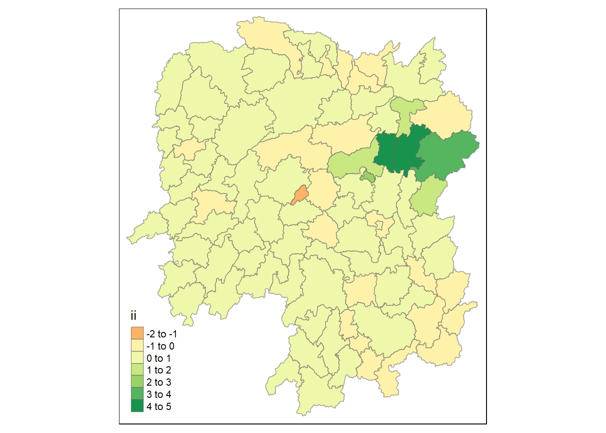
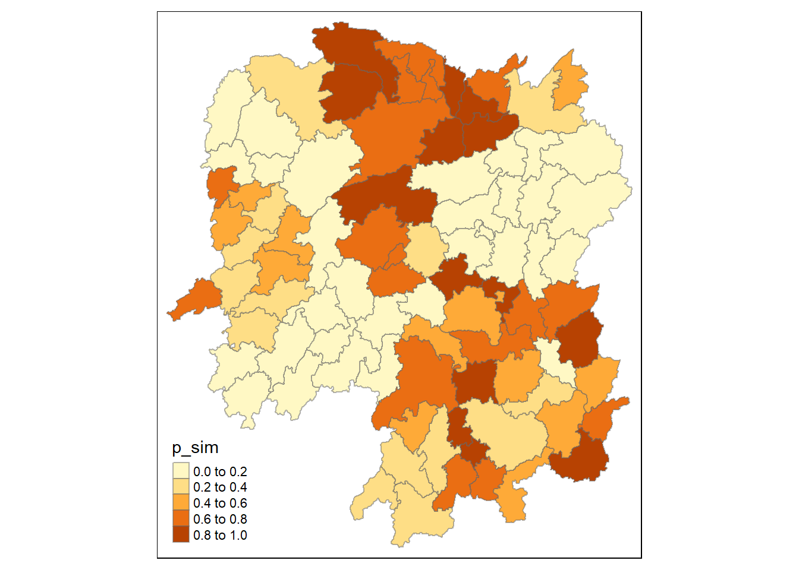

pacman::p_load(sf, tmap, sfdep, zoo, tidyverse)In Class Exercise 6: Global and Local Measures of Autocorrelation
Setup
Import Data
hunan <- st_read(dsn = "data/geospatial",
layer = "Hunan")Reading layer `Hunan' from data source
`C:\zoe-chia\IS415\In-class_Ex\In-class_Ex07\data\geospatial'
using driver `ESRI Shapefile'
Simple feature collection with 88 features and 7 fields
Geometry type: POLYGON
Dimension: XY
Bounding box: xmin: 108.7831 ymin: 24.6342 xmax: 114.2544 ymax: 30.12812
Geodetic CRS: WGS 84Attribute Data
hunan2012 <- read_csv("data/aspatial/Hunan_2012.csv")hunan_GDPPC <- left_join(hunan,hunan2012) %>%
select(1:4, 7, 9, 15)Step 1: Queen’s method
Prepare weight metrics first
wm_q <- hunan_GDPPC %>%
mutate(nb = st_contiguity(geometry),
wt = st_weights(nb,
style = "W"),
.before = 1)Compute Global Moran’s I
moranI <- global_moran(wm_q$GDPPC,
wm_q$nb,
wm_q$wt)Perform Global Moran’s I
Gives you test statistics , p value for you to find
global_moran_test(wm_q$GDPPC,
wm_q$nb,
wm_q$wt)
Moran I test under randomisation
data: x
weights: listw
Moran I statistic standard deviate = 4.7351, p-value = 1.095e-06
alternative hypothesis: greater
sample estimates:
Moran I statistic Expectation Variance
0.300749970 -0.011494253 0.004348351 0.000001095 is smaller than the alpha value of 0.05 hence we reject the H0 that the observed gdppc is spatially independent.
Moran I Statistic value is greater than 0, hence there are signed of clustering. ### Perform Global Moran’s I Permutation Test Ensure that your model is reproducible:
set.seed(1234)global_moran_perm(wm_q$GDPPC,
wm_q$nb,
wm_q$wt,
nsim = 99)
Monte-Carlo simulation of Moran I
data: x
weights: listw
number of simulations + 1: 100
statistic = 0.30075, observed rank = 100, p-value < 2.2e-16
alternative hypothesis: two.sided0.30075 is the moran’s statistic Significance level (p value) has changed
Computing Local Moran’s I
lisa <- wm_q %>%
mutate(local_moran = local_moran(
GDPPC, nb, wt, nsim = 99),
.before = 1) %>% # push everything in front
unnest(local_moran) # so that we can map later
lisaSimple feature collection with 88 features and 21 fields
Geometry type: POLYGON
Dimension: XY
Bounding box: xmin: 108.7831 ymin: 24.6342 xmax: 114.2544 ymax: 30.12812
Geodetic CRS: WGS 84
# A tibble: 88 × 22
ii eii var_ii z_ii p_ii p_ii_…¹ p_fol…² skewn…³ kurtosis
<dbl> <dbl> <dbl> <dbl> <dbl> <dbl> <dbl> <dbl> <dbl>
1 -0.00147 0.00177 4.18e-4 -0.158 0.874 0.82 0.41 -0.812 0.652
2 0.0259 0.00641 1.05e-2 0.190 0.849 0.96 0.48 -1.09 1.89
3 -0.0120 -0.0374 1.02e-1 0.0796 0.937 0.76 0.38 0.824 0.0461
4 0.00102 -0.0000349 4.37e-6 0.506 0.613 0.64 0.32 1.04 1.61
5 0.0148 -0.00340 1.65e-3 0.449 0.654 0.5 0.25 1.64 3.96
6 -0.0388 -0.00339 5.45e-3 -0.480 0.631 0.82 0.41 0.614 -0.264
7 3.37 -0.198 1.41e+0 3.00 0.00266 0.08 0.04 1.46 2.74
8 1.56 -0.265 8.04e-1 2.04 0.0417 0.08 0.04 0.459 -0.519
9 4.42 0.0450 1.79e+0 3.27 0.00108 0.02 0.01 0.746 -0.00582
10 -0.399 -0.0505 8.59e-2 -1.19 0.234 0.28 0.14 -0.685 0.134
# … with 78 more rows, 13 more variables: mean <fct>, median <fct>,
# pysal <fct>, nb <nb>, wt <list>, NAME_2 <chr>, ID_3 <int>, NAME_3 <chr>,
# ENGTYPE_3 <chr>, County <chr>, avg_wage <dbl>, GDPPC <dbl>,
# geometry <POLYGON [°]>, and abbreviated variable names ¹p_ii_sim,
# ²p_folded_sim, ³skewnessii: local moran i statistics
eii: expectations, std dev
var: var of moran i
z: standardised moran i
p_ii: p-value of i
p_ii_sim: p-value after simulation
p folded: k fold method for simulation
mean and pysal (python library) should be the same, you can use either mean or pysal.
Visualising Local Moran’s I
tmap_mode('plot')
tm_shape(lisa) +
tm_fill("ii") +
tm_borders(alpha = 0.5) +
tm_view(set.zoom.limits = c(6,8))
tmap_mode('plot')
tm_shape(lisa) +
tm_fill("p_ii_sim") + # p-value of local moran i
tm_borders(alpha = 0.5)
Note
Should ideally use the one from the simulation (e.g. p_ii_sim r p_folded_sim) to get a more stable result.
Combining the two
lisa_sig <- lisa %>%
filter(p_ii < 0.05) # take out those that are < 0.05
tmap_mode('plot')
tm_shape(lisa)+
tm_polygons() +
tm_borders(alpha = 0.5) +
tm_shape(lisa_sig)+
tm_fill("mean") +
tm_borders(alpha = 0.4)
low-high and high-low are outliers.
Not tidy ^ figure out from hands on ex. Should also have a portion called insignificant.
Deriving contiguity weight: Rook’s method
HCSA <- wm_q %>%
mutate(local_Gi = local_gstar_perm(
GDPPC, nb, wt, nsim = 99),
.before = 1) %>%
unnest(local_Gi)
HCSASimple feature collection with 88 features and 17 fields
Geometry type: POLYGON
Dimension: XY
Bounding box: xmin: 108.7831 ymin: 24.6342 xmax: 114.2544 ymax: 30.12812
Geodetic CRS: WGS 84
# A tibble: 88 × 18
gi_star e_gi var_gi p_value p_sim p_fol…¹ skewn…² kurto…³ nb wt
<dbl> <dbl> <dbl> <dbl> <dbl> <dbl> <dbl> <dbl> <nb> <lis>
1 -0.00567 0.0115 0.00000812 9.95e-1 0.82 0.41 1.03 1.23 <int> <dbl>
2 -0.235 0.0110 0.00000581 8.14e-1 1 0.5 0.912 1.05 <int> <dbl>
3 0.298 0.0114 0.00000776 7.65e-1 0.7 0.35 0.455 -0.732 <int> <dbl>
4 0.145 0.0121 0.0000111 8.84e-1 0.64 0.32 0.900 0.726 <int> <dbl>
5 0.356 0.0113 0.0000119 7.21e-1 0.64 0.32 1.08 1.31 <int> <dbl>
6 -0.480 0.0116 0.00000706 6.31e-1 0.82 0.41 0.364 -0.676 <int> <dbl>
7 3.66 0.0116 0.00000825 2.47e-4 0.02 0.01 0.909 0.664 <int> <dbl>
8 2.14 0.0116 0.00000714 3.26e-2 0.16 0.08 1.13 1.48 <int> <dbl>
9 4.55 0.0113 0.00000656 5.28e-6 0.02 0.01 1.36 4.14 <int> <dbl>
10 1.61 0.0109 0.00000341 1.08e-1 0.18 0.09 0.269 -0.396 <int> <dbl>
# … with 78 more rows, 8 more variables: NAME_2 <chr>, ID_3 <int>,
# NAME_3 <chr>, ENGTYPE_3 <chr>, County <chr>, avg_wage <dbl>, GDPPC <dbl>,
# geometry <POLYGON [°]>, and abbreviated variable names ¹p_folded_sim,
# ²skewness, ³kurtosisLocal G: where ii = 0, exclude yourself
Local G*: Include yourself, hn99
Visualising Gi*
# tmap_mode("view")
# tm_shape(HCSA) +
# tm_fill("gi_star") +
# tm_borders(alpha = 0.5) +
# tm_view(c(6,8))Visualing p value of HCSA
tmap_mode("plot")
tm_shape(HCSA) +
tm_fill("p_sim") +
tm_borders(alpha = 0.5)
Emerging Hot Spot Analysis
Year, location name, value Consolidate
hunan <- st_read(dsn = "data/geospatial",
layer = "Hunan")Reading layer `Hunan' from data source
`C:\zoe-chia\IS415\In-class_Ex\In-class_Ex07\data\geospatial'
using driver `ESRI Shapefile'
Simple feature collection with 88 features and 7 fields
Geometry type: POLYGON
Dimension: XY
Bounding box: xmin: 108.7831 ymin: 24.6342 xmax: 114.2544 ymax: 30.12812
Geodetic CRS: WGS 84GDPPC <- read_csv("data/aspatial/Hunan_GDPPC.csv")GDPPC_st <- spacetime(GDPPC,
hunan,
.loc_col = "County",
.time_col = "Year")GDPPC_nb <-GDPPC_st %>%
activate("geometry") %>%
mutate(
nb = include_self(st_contiguity(geometry)),
wt= st_weights(nb)
) %>%
set_nbs("nb") %>%
set_wts("wt")Computing Gi*
gi_stars <- GDPPC_nb %>%
group_by(Year) %>%
mutate(gi_star = local_gstar_perm(
GDPPC, nb, wt, nsim = 99)) %>%
tidyr::unnest(gi_star)Mann-Kendall Test
cbg <- gi_stars %>%
ungroup() %>%
filter(County == "Changsha") |>
select(County, Year, gi_star)#emerging <- ehsa %>%
# arrange(s1,abs(tau)) %>%
# slice(1:5)Performing Emerging Hotspot Analysis
#ehsa <- emerging_hotspot_analysis(
# x = GDPP_st,
# .var = "GDPPC",
# k = 1,
# nsim = 99
#)# ggplot(data = ehsa,
# aes(x = classification)) +
# geom_bar()Visualing EHSA
# lisa_sig <- lisa %>%
# filter(p_li < 0.05)
#tmap_mode('plot')
#tm_shape(lisa) +
# tm_polygons() +
# tm_borders(alpha = 0.5) +
# tm_shape(lisa_sig) +
# tm_fill("mean") +
# tm_borders(alpha = 0.4)#p <- gplot(data = cbg,
# aes (x = Year, y = gi_star)) +
# geom_line() +
# theme_light()ggplotly(p) - create interactive
#cbg %<%
# sumarise